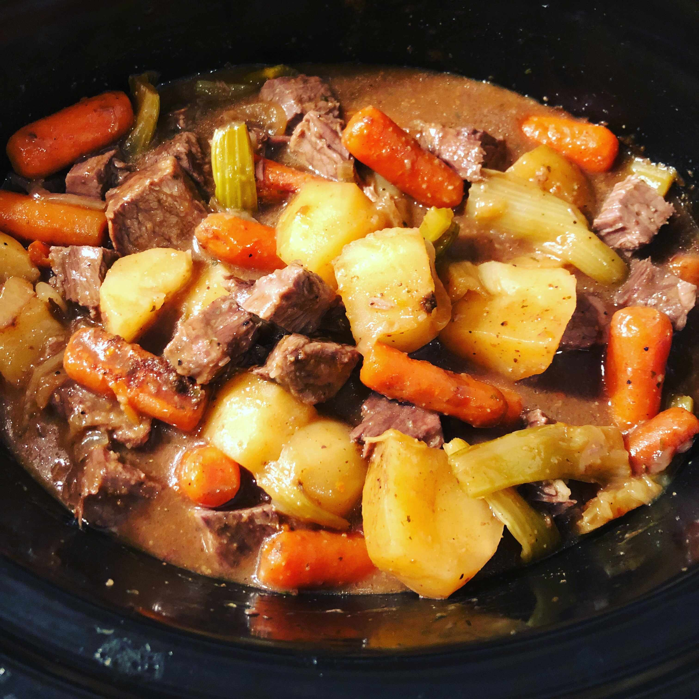

Slow Cooker Pot Roast

Ingredients
- cooking spray
- 1 onion, sliced
- 1 (2 1/2 pound) boneless beef chuck roast
- salt and ground black pepper to taste
- ¼ cup all-purpose flour
- 1 (1.2 ounce) package dry beef gravy mix
- 1 (1 ounce) package ranch dressing mix
- 1 (.7 ounce) package dry Italian-style salad dressing mix
- ½ cup water, or as needed
- 5 whole peeled carrots (Optional)
Directions
- Spray the inside of a slow cooker with cooking spray. Spread onion slices in the bottom of the cooker.
- Pat roast dry and sprinkle all over with salt and pepper. Spread flour onto a work surface and roll roast in flour to coat all sides, using your hands or a small sturdy plate to pound flour into the meat. Place floured roast into the slow cooker on top of onions.
- Whisk together beef gravy mix, ranch dressing mix, and Italian dressing mix in a bowl, then add water and whisk until smooth. Pour over roast. Distribute carrots around the meat.
- Cover the slow cooker, set to Low, and cook until roast is tender and gravy has thickened, about 8 hours.